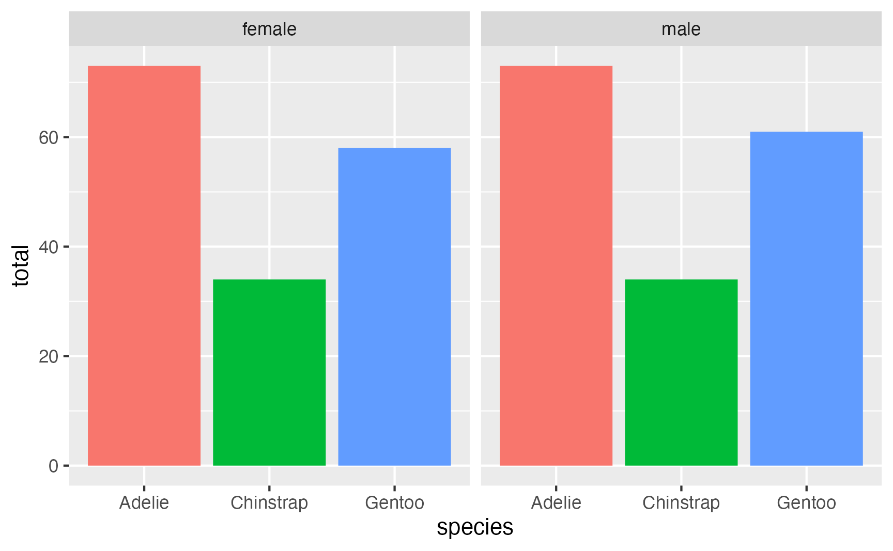

![]()
{kind=link}
{kind=link}
{kind=link}
{kind=link}
{kind=link}
{kind=link}
{kind=link}
{kind=link}
{kind=link}
{kind=link}
{kind=link}
{kind=link}
{kind=link}
{kind=link}
{kind=link}
{kind=link}
{kind=link}
{kind=link}
library(tidyverse)
library(palmerpenguins)
penguins <- penguins |> drop_na()I’ve used Garrick Aden-Buie’s tidyexplain animations since he first made them in 2018. They’re incredibly useful for teaching—being able to see which rows left_join() includes when merging two datasets, or which cells end up where when pivoting longer or pivoting wider is so valuable. Check them all out—they’re so fantastic:

left_join() animation by Garrick Aden-BuieOne set of animations that I’ve always wished existed but doesn’t is how {dplyr}’s mutate(), summarize(), group_by(), and summarize() work. Unlike other more straightforward {dplyr} functions like filter() and select(), these mutating/summarizing/grouping functions often involve multiple behind-the-scenes steps that are hard to see. There’s even an official term for this kind of workflow: split/apply/combine.
When I teach about group_by() |> summarize(), I end up waving my arms around a lot to explain how group_by() puts rows into smaller, invisible datasets behind the scenes. This works, I guess, but I still find that it can be hard for people to conceptualize. It gets even trickier when explaining how {dplyr} keeps some grouping structures intact after summarizing and what exactly ungroup() does.
So, I finally buckled down and made my own tidyexplain-esque animations with Adobe Illustrator and After Effects.1
1 I tried doing it with R and {gganimate} like the original tidyexplain animations, but it was too hard to do with all the multiple grouping, summarizing, and recombining steps—so these are all artisanally handcrafted animations.
Downloads
You can download versions of all seven animations here:
-
mutate(): MP4, GIF, static PDF, static SVG, static PNG -
summarize(): MP4, GIF, static PDF, static SVG, static PNG -
group_by() |> ungroup(): MP4, GIF, static PDF, static SVG, static PNG -
group_by() |> mutate(): MP4, GIF, static PDF, static SVG, static PNG -
group_by(cat1) |> summarize(): MP4, GIF, static PDF, static SVG, static PNG -
group_by(cat2) |> summarize(): MP4, GIF, static PDF, static SVG, static PNG -
group_by(cat1, cat2) |> summarize(): MP4, GIF, static PDF, static SVG, static PNG
And for fun, here are all the original files:
They’re Creative Commons-licensed—do whatever you want with them!
In this post, we’ll use these animations to explain each of these concepts and apply them to data from {palmerpenguins}. Let’s load some packages and data first:
Adding new columns with mutate()
The mutate() function in {dplyr} adds new columns. It’s not destructive—all our existing data will still be there after you add new columns2
2 Unless we use an existing column name inside mutate(), in which case that column will get replaced with the new one.
By default, mutate() sticks the new column on the far right of the dataset (scroll over to the right to see body_mass_kg here):
penguins |>
mutate(body_mass_kg = body_mass_g / 1000)
## # A tibble: 333 × 9
## species island bill_length_mm bill_depth_mm flipper_length_mm body_mass_g sex year body_mass_kg
## <fct> <fct> <dbl> <dbl> <int> <int> <fct> <int> <dbl>
## 1 Adelie Torgersen 39.1 18.7 181 3750 male 2007 3.75
## 2 Adelie Torgersen 39.5 17.4 186 3800 female 2007 3.8
## 3 Adelie Torgersen 40.3 18 195 3250 female 2007 3.25
## 4 Adelie Torgersen 36.7 19.3 193 3450 female 2007 3.45
## 5 Adelie Torgersen 39.3 20.6 190 3650 male 2007 3.65
## 6 Adelie Torgersen 38.9 17.8 181 3625 female 2007 3.62
## 7 Adelie Torgersen 39.2 19.6 195 4675 male 2007 4.68
## 8 Adelie Torgersen 41.1 17.6 182 3200 female 2007 3.2
## 9 Adelie Torgersen 38.6 21.2 191 3800 male 2007 3.8
## 10 Adelie Torgersen 34.6 21.1 198 4400 male 2007 4.4
## # ℹ 323 more rowsWe can also control where the new column shows up with either the .before or .after argument:
penguins |>
mutate(
body_mass_kg = body_mass_g / 1000,
.after = island
)
## # A tibble: 333 × 9
## species island body_mass_kg bill_length_mm bill_depth_mm flipper_length_mm body_mass_g sex year
## <fct> <fct> <dbl> <dbl> <dbl> <int> <int> <fct> <int>
## 1 Adelie Torgersen 3.75 39.1 18.7 181 3750 male 2007
## 2 Adelie Torgersen 3.8 39.5 17.4 186 3800 female 2007
## 3 Adelie Torgersen 3.25 40.3 18 195 3250 female 2007
## 4 Adelie Torgersen 3.45 36.7 19.3 193 3450 female 2007
## 5 Adelie Torgersen 3.65 39.3 20.6 190 3650 male 2007
## 6 Adelie Torgersen 3.62 38.9 17.8 181 3625 female 2007
## 7 Adelie Torgersen 4.68 39.2 19.6 195 4675 male 2007
## 8 Adelie Torgersen 3.2 41.1 17.6 182 3200 female 2007
## 9 Adelie Torgersen 3.8 38.6 21.2 191 3800 male 2007
## 10 Adelie Torgersen 4.4 34.6 21.1 198 4400 male 2007
## # ℹ 323 more rowsSummarizing with summarize()
The summarize() function, on the other hand, is destructive. It collapses our dataset into a single value and throws away any columns that we don’t use when summarizing.
After using summarize() on the penguins data, we only see three values in one row: average bill length, total penguin weight, and the number of penguins in the dataset. All other columns are gone.
Grouping and ungrouping with group_by() and ungroup()
The group_by() function splits a dataset into smaller subsets based on the values of columns that we specify. Importantly, this splitting happens behind the scenes—you don’t actually ever see the data split up into smaller datasets.3 To undo the grouping and bring all the rows back together, use ungroup().
3 I like to imagine that the data is splitting into smaller groups, Minority Report-style, or like Tony Stark’s JARVIS-enabled HUD.
Importantly, grouping doesn’t actually change the order of the rows in the dataset. If we use group_by() and look at your dataset, it’ll still be in the existing order. The only sign that the data is invisibly grouped is a little Groups: sex [2] note at the top of the output.
penguins |>
group_by(sex)
## # A tibble: 333 × 8
## # Groups: sex [2]
## species island bill_length_mm bill_depth_mm flipper_length_mm body_mass_g sex year
## <fct> <fct> <dbl> <dbl> <int> <int> <fct> <int>
## 1 Adelie Torgersen 39.1 18.7 181 3750 male 2007
## 2 Adelie Torgersen 39.5 17.4 186 3800 female 2007
## 3 Adelie Torgersen 40.3 18 195 3250 female 2007
## 4 Adelie Torgersen 36.7 19.3 193 3450 female 2007
## 5 Adelie Torgersen 39.3 20.6 190 3650 male 2007
## 6 Adelie Torgersen 38.9 17.8 181 3625 female 2007
## 7 Adelie Torgersen 39.2 19.6 195 4675 male 2007
## 8 Adelie Torgersen 41.1 17.6 182 3200 female 2007
## 9 Adelie Torgersen 38.6 21.2 191 3800 male 2007
## 10 Adelie Torgersen 34.6 21.1 198 4400 male 2007
## # ℹ 323 more rowsGrouping is fairly useless on its own, but it becomes really powerful when combined with mutate() or summarize().
Mutating within groups
If we use mutate() after grouping, new columns are added to each subset separately. In many cases, you won’t notice any difference between using mutate() on an ungrouped or grouped dataset—you’ll get the same values. For instance, if we use mutate(body_mass_kg = body_mass_g / 1000) on an ungrouped dataset, R will create a column for the whole dataset that divides body_mass_g by 1,000; if we use mutate(body_mass_kg = body_mass_g / 1000) on a grouped dataset, R will create a new column within each of the subsets. Both approaches will generate the same values.4
4 Using mutate() on the grouped dataset will be a tiiiiiny bit slower because it’s actually running mutate() on each of the groups.
This is actually important if we’re referencing other values within the group. In the example above, we created a new column y that subtracted the smallest value of x from each value of x. When running mutate(y = x - min(x)) on the ungrouped dataset, the smallest value of x is 1, so all the numbers decrease by 1. When running mutate(y = x * 2) on a grouped dataset, though, min(x) refers to the smallest value of x within each of the subsets. Check out this example here: the minimum values in groups A, B, and C are 1, 4, and 7 respectively, so in subset A we subtract 1 from all the values of x, in subset B we subtract 4 from all the values of x, and in subset C we subtract 7 from all the values of x. As a result, the new y column contains 0, 1, and 2 in each of the groups:
Panel data (or time-series cross-sectional data, like the gapminder dataset) is good example of a situation where grouping and mutating is important. For example, we can use lag() to create a new column (lifeExp_previous) that shows the previous year’s life expectancy.5
5 This is super common with models where you time-shifted variables, like predicting an outcome based on covariates in the previous year.
library(gapminder)
gapminder_smaller <- gapminder |>
filter(year %in% c(1997, 2002, 2007)) # Only show a few years
gapminder_smaller |>
mutate(lifeExp_previous = lag(lifeExp), .after = lifeExp)
## # A tibble: 426 × 7
## country continent year lifeExp lifeExp_previous pop gdpPercap
## <fct> <fct> <int> <dbl> <dbl> <int> <dbl>
## 1 Afghanistan Asia 1997 41.8 NA 22227415 635.
## 2 Afghanistan Asia 2002 42.1 41.8 25268405 727.
## 3 Afghanistan Asia 2007 43.8 42.1 31889923 975.
## 4 Albania Europe 1997 73.0 43.8 3428038 3193.
## 5 Albania Europe 2002 75.7 73.0 3508512 4604.
## 6 Albania Europe 2007 76.4 75.7 3600523 5937.
## 7 Algeria Africa 1997 69.2 76.4 29072015 4797.
## 8 Algeria Africa 2002 71.0 69.2 31287142 5288.
## 9 Algeria Africa 2007 72.3 71.0 33333216 6223.
## 10 Angola Africa 1997 41.0 72.3 9875024 2277.
## # ℹ 416 more rowsAfghanistan in 1997 has a lagged life expectancy of NA, but that’s fine and to be expected—there’s no row for it to look at and copy the value (i.e. there’s no Afghanistan 1992 row). Afghanistan’s lagged life expectancy in 2002 is the same value as the actual life expectancy in 1997. Great, it worked!6
6 Technically this isn’t a one-year lag; this is a five-year lag, since the data is spaced every 5 years.
But look at Albania’s lagged life expectancy in 1997—it’s 43.84, which is actually Afghanistan’s 2007 life expectancy! Lagged values bleed across countries here.
If we group the data by country before lagging, though, the lagging happens within each of the subsets, so the first year of every country is missing (since there’s no previous year to look at). Now every country’s 1997 value is NA, since the new column was created separately in each of the smaller behind-the-scenes country-specific datasets:
gapminder_smaller |>
group_by(country) |>
mutate(lifeExp_previous = lag(lifeExp), .after = lifeExp)
## # A tibble: 426 × 7
## # Groups: country [142]
## country continent year lifeExp lifeExp_previous pop gdpPercap
## <fct> <fct> <int> <dbl> <dbl> <int> <dbl>
## 1 Afghanistan Asia 1997 41.8 NA 22227415 635.
## 2 Afghanistan Asia 2002 42.1 41.8 25268405 727.
## 3 Afghanistan Asia 2007 43.8 42.1 31889923 975.
## 4 Albania Europe 1997 73.0 NA 3428038 3193.
## 5 Albania Europe 2002 75.7 73.0 3508512 4604.
## 6 Albania Europe 2007 76.4 75.7 3600523 5937.
## 7 Algeria Africa 1997 69.2 NA 29072015 4797.
## 8 Algeria Africa 2002 71.0 69.2 31287142 5288.
## 9 Algeria Africa 2007 72.3 71.0 33333216 6223.
## 10 Angola Africa 1997 41.0 NA 9875024 2277.
## # ℹ 416 more rowsSummarizing groups with group_by() |> summarize()
While collapsing an entire dataset can be helpful for finding overall summary statistics (e.g. the average, minimum, and maximum values for columns you’re interested in), summarize() is better used with groups. If we use summarize() on a grouped dataset, each subset is collapsed into a single row. This will create different summary values, depending on the groups you use. In this example, grouping by cat1 gives us a summarized dataset with three rows (for a, b, and c):
While here, if we group by cat2, we get a summarized dataset with two rows (for j and k):
If we use group_by() before summarizing the penguins data, we’ll get a column for the group, along with average bill length, total penguin weight, and the number of penguins in each group. As before, all other columns are gone.
We can see summarized values by species:
penguins |>
group_by(species) |>
summarize(
avg_bill_length = mean(bill_length_mm),
total_weight = sum(body_mass_g),
n_penguins = n() # This returns the number of rows in each group
)
## # A tibble: 3 × 4
## species avg_bill_length total_weight n_penguins
## <fct> <dbl> <int> <int>
## 1 Adelie 38.8 541100 146
## 2 Chinstrap 48.8 253850 68
## 3 Gentoo 47.6 606000 119…or by sex…
…or by any other column.
Grouping by numeric columns
One common mistake is to feed a numeric columns into group_by(), like this:
penguins |>
group_by(flipper_length_mm) |>
summarize(
avg_bill_length = mean(bill_length_mm),
total_weight = sum(body_mass_g),
n_penguins = n()
)
## # A tibble: 54 × 4
## flipper_length_mm avg_bill_length total_weight n_penguins
## <int> <dbl> <int> <int>
## 1 172 37.9 3150 1
## 2 174 37.8 3400 1
## 3 176 40.2 3450 1
## 4 178 39.0 13300 4
## 5 180 39.8 14900 4
## 6 181 41.5 24000 7
## 7 182 39.6 9775 3
## 8 183 39.2 6625 2
## 9 184 37.9 25650 7
## 10 185 38.0 31550 9
## # ℹ 44 more rowsThis technically calculates something, but it’s generally not what you’re looking for. R is making groups for each of the unique values of flipper length and then calculating summaries for those groups. There’s only one penguin with a flipper length of 172 mm; there are 7 with 181 mm. Grouping by a numeric variable can be useful if you want to create a histogram-like table of counts of unique values, but most of the time, you don’t want to do this.
Summarizing multiple groups
We can specify more than one group with group_by(), which will create behind-the-scenes datasets for each unique combination of values in the groups. Here, when group by both cat1 and cat2, we get six groups (a & j, a & k, b & j, b & k, c & j, c & k), which we can then use with mutate() or summarize():
Leftover groupings and ungroup()
Some subtle and interesting things happen when summarizing with multiple groups, though, and they throw people off all the time.
When you use summarize() on a grouped dataset, {dplyr} will automatically ungroup the last of the groups. This happens invisibly when you’re only grouping by one thing. For example, this has three rows, and no Groups: species[3] note at the top:
penguins |>
group_by(species) |>
summarize(total = n())
## # A tibble: 3 × 2
## species total
## <fct> <int>
## 1 Adelie 146
## 2 Chinstrap 68
## 3 Gentoo 119When grouping by multiple things, {dplyr} will automatically ungroup the last of the groups (i.e. the right-most group), but keep everything else grouped. This has six rows and is grouped by species (hence the Groups: species [3]), and R gives you an extra message alerting you to the fact that it’s still grouped by something: `summarise()` has grouped output by 'species'.
penguins |>
group_by(species, sex) |>
summarize(total = n())
## `summarise()` has grouped output by 'species'. You can override using the `.groups` argument.
## # A tibble: 6 × 3
## # Groups: species [3]
## species sex total
## <fct> <fct> <int>
## 1 Adelie female 73
## 2 Adelie male 73
## 3 Chinstrap female 34
## 4 Chinstrap male 34
## 5 Gentoo female 58
## 6 Gentoo male 61The same thing happens in reverse if we switch species and sex. The results here are still grouped by sex:
penguins |>
group_by(sex, species) |>
summarize(total = n())
## `summarise()` has grouped output by 'sex'. You can override using the `.groups` argument.
## # A tibble: 6 × 3
## # Groups: sex [2]
## sex species total
## <fct> <fct> <int>
## 1 female Adelie 73
## 2 female Chinstrap 34
## 3 female Gentoo 58
## 4 male Adelie 73
## 5 male Chinstrap 34
## 6 male Gentoo 61We can use ungroup() to bring the data all the way back together and get rid of the groups:
penguins |>
group_by(species, sex) |>
summarize(total = n()) |>
ungroup()
## `summarise()` has grouped output by 'species'. You can override using the `.groups` argument.
## # A tibble: 6 × 3
## species sex total
## <fct> <fct> <int>
## 1 Adelie female 73
## 2 Adelie male 73
## 3 Chinstrap female 34
## 4 Chinstrap male 34
## 5 Gentoo female 58
## 6 Gentoo male 61Alternatively, summarize has a .groups argument that you can use to control what happens to the groups after you summarize. By default, it uses .groups = "drop_last" and gets rid of the right-most group, but you can also drop all the groups (.groups = "drop") and keep all the groups (.groups = "keep"). See? No groups!
penguins |>
group_by(species, sex) |>
summarize(total = n(), .groups = "drop")
## # A tibble: 6 × 3
## species sex total
## <fct> <fct> <int>
## 1 Adelie female 73
## 2 Adelie male 73
## 3 Chinstrap female 34
## 4 Chinstrap male 34
## 5 Gentoo female 58
## 6 Gentoo male 61
Experimental different way of grouping and summarizing
With newer versions of {dplyr} there’s a new experimental way to specify groups when summarizing, borrowed from {data.table}. Rather than specify groups in an explicit group_by() function, you can do it inside summarize() with the .by argument:
penguins |>
summarize(total = n(), .by = c(species, sex))
## # A tibble: 6 × 3
## species sex total
## <fct> <fct> <int>
## 1 Adelie male 73
## 2 Adelie female 73
## 3 Gentoo female 58
## 4 Gentoo male 61
## 5 Chinstrap female 34
## 6 Chinstrap male 34This automatically ungroups everything when it’s done, so you don’t have any leftover groupings.
Why care about leftover groups?
Lots of the time, you don’t actually need to worry about leftover groupings. If you’re plotting or modeling or doing other stuff with the data, those functions will ignore the groups and work on the whole dataset. For example, I do stuff like calculating and plotting group summaries all the time—plot_data here is still grouped by species after summarizing, but ggplot() doesn’t care:
plot_data <- penguins |>
group_by(species, sex) |>
summarize(total = n())
## `summarise()` has grouped output by 'species'. You can override using the `.groups` argument.
# plot_data is grouped by sex, but that doesn't matter here
ggplot(plot_data, aes(x = species, y = total, fill = species)) +
geom_col() +
guides(fill = "none") +
facet_wrap(vars(sex))
Leftover groups are very important when you use things like mutate() on the summarized dataset.
Like here, we’ll create a proportion column based on total / sum(total). Because we only grouped by one thing, there are no leftover groupings, so the prop column adds up to 100%:
penguins |>
group_by(species) |>
summarize(total = n()) |>
mutate(prop = total / sum(total))
## # A tibble: 3 × 3
## species total prop
## <fct> <int> <dbl>
## 1 Adelie 146 0.438
## 2 Chinstrap 68 0.204
## 3 Gentoo 119 0.357Next, we’ll group by two things, which creates behind-the-scenes datasets for all the six combinations of species and sex. When {dplyr} is done, it ungroups the sex group, but leaves the dataset grouped by species. The prop column no longer adds up to 100%; it adds to 300%. That’s because it calculated total/sum(total) within each species group (so 50% of Adélies are female, 50% are male, etc.)
penguins |>
group_by(species, sex) |>
summarize(total = n()) |>
mutate(prop = total / sum(total))
## `summarise()` has grouped output by 'species'. You can override using the `.groups` argument.
## # A tibble: 6 × 4
## # Groups: species [3]
## species sex total prop
## <fct> <fct> <int> <dbl>
## 1 Adelie female 73 0.5
## 2 Adelie male 73 0.5
## 3 Chinstrap female 34 0.5
## 4 Chinstrap male 34 0.5
## 5 Gentoo female 58 0.487
## 6 Gentoo male 61 0.513If we reverse the grouping order so that sex comes first, {dplyr} will automatically stop grouping by species and keep the dataset grouped by sex. That means mutate() will work within each sex group, so the prop column here adds to 200%. 44% of female penguins are Adélies, 21% of female penguins are Chinstraps, and 35% of female penguins are Gentoos, and so on.
penguins |>
group_by(sex, species) |>
summarize(total = n()) |>
mutate(prop = total / sum(total))
## `summarise()` has grouped output by 'sex'. You can override using the `.groups` argument.
## # A tibble: 6 × 4
## # Groups: sex [2]
## sex species total prop
## <fct> <fct> <int> <dbl>
## 1 female Adelie 73 0.442
## 2 female Chinstrap 34 0.206
## 3 female Gentoo 58 0.352
## 4 male Adelie 73 0.435
## 5 male Chinstrap 34 0.202
## 6 male Gentoo 61 0.363If we explicitly ungroup before calculating the proportion,7 then mutate() will work on the whole dataset instead of sex- or species-specific groups. Here, 22% of all penguins are female Adélies, 10% are female Chinstraps, etc.
7 Or use the .groups argument or .by argument in summarize()
penguins |>
group_by(sex, species) |>
summarize(total = n()) |>
ungroup() |>
mutate(prop = total / sum(total))
## `summarise()` has grouped output by 'sex'. You can override using the `.groups` argument.
## # A tibble: 6 × 4
## sex species total prop
## <fct> <fct> <int> <dbl>
## 1 female Adelie 73 0.219
## 2 female Chinstrap 34 0.102
## 3 female Gentoo 58 0.174
## 4 male Adelie 73 0.219
## 5 male Chinstrap 34 0.102
## 6 male Gentoo 61 0.183We don’t have to rely on {dplyr}’s automatic ungroup-the-last-grouping feature and we can add our own grouping explicitly later. Like here, {dplyr} stops grouping by sex, which means that the prop column would add to 300%, showing the proportion of sexes within each species. But if we throw in a group_by(sex) before mutate(), it’ll put everything in two behind-the-scenes datasets (male and female) and calculate the proportion of species within each sex. The resulting dataset is still grouped by sex, since mutate() doesn’t drop any groups like summarize():
penguins |>
group_by(species, sex) |>
summarize(total = n()) |>
group_by(sex) |>
mutate(prop = total / sum(total))
## `summarise()` has grouped output by 'species'. You can override using the `.groups` argument.
## # A tibble: 6 × 4
## # Groups: sex [2]
## species sex total prop
## <fct> <fct> <int> <dbl>
## 1 Adelie female 73 0.442
## 2 Adelie male 73 0.435
## 3 Chinstrap female 34 0.206
## 4 Chinstrap male 34 0.202
## 5 Gentoo female 58 0.352
## 6 Gentoo male 61 0.363Citation
BibTeX citation:
@online{heiss2024,
author = {Heiss, Andrew},
title = {Visualizing \{Dplyr\}’s Mutate(), Summarize(), Group\_by(),
and Ungroup() with Animations},
date = {2024-04-04},
url = {https://www.andrewheiss.com/blog/2024/04/04/group_by-summarize-ungroup-animations/},
doi = {10.59350/d2sz4-w4e25},
langid = {en}
}
For attribution, please cite this work as:
Heiss, Andrew. 2024. “Visualizing {Dplyr}’s Mutate(), Summarize(),
Group_by(), and Ungroup() with Animations.” April 4, 2024. https://doi.org/10.59350/d2sz4-w4e25.